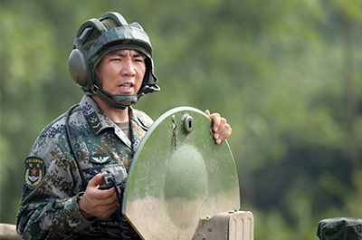
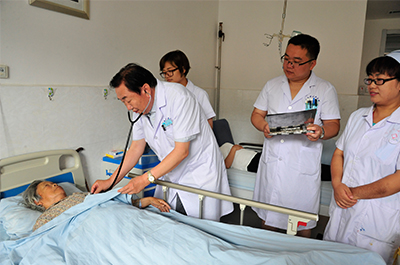

Home Page>>Transcribing
19 representative wind recording
The 19th CPC national congress was held at the decisive stage of building a moderately prosperous society in all respects. More than 89 million party members and 4.5 million party organizations are entrusted with the 19th CPC national congress, which embodies the will of the whole party, carries the expectations of the people and performs sacred duties.
In the historical process of realizing the Chinese dream of national rejuvenation, tens of thousands of communist party members are making unremitting efforts. This print special open "19 big representative wind record" column, the focal point introduces the representative deeds from the basic level front line. Let us learn and carry forward their vanguard quality and spirit demeanor, and welcome the 19th party victory convening.

Excellent communist
Master sergeant award for outstanding talent
The time model
How powerful is a soldier? He joined the army for 8 years, passed two professional special grade and one professional grade, and was awarded the second grade and the third grade. Today, he is the commander of the amphibious armored assault vehicle, proficient in driving, communications, shooting three majors, and became the youngest amphibious armored vanguard to achieve "two superclasses, one class".
How big is a soldier doing? In the past five years, he has been the class monitor and the coach. He has brought 28 top students, 15 students have passed the professional level, and 8 students have taken the position of class monitor.
His name is wang rui. He is 27 years old. He is the monitor of a brigade of the 74th group army and the 19th party representative. Army dream, after the army, he always mind with great political enthusiasm to learn and implement general secretary xi series of important speech spirit and governing new ideas, new ideas new strategy, adhere to the armed with the party's innovation theory of the mind, persist inheritance red gene, aiming at actual combat study hard, army goal fused into specific positions, implement in action, try to do loyal warriors, when the army pacesetter, completing the daunting task for many times.
South China is sweltering in the summer heat wave in August. In the field training field, the reporter saw a summer training uniform of wang rui, he and the soldiers are overhauling the chariots, preparing for the next day's combat drill. This is a great guy from a small mountain village in chengde, hebei province. In the first year of enlistment, he was the only private who drafted a car to take part in the army. In the second year, he became the only one who got a driving grade. In the sixth year of serving in the army, he passed the special grade examination of driving major and became the youngest and the shortest special grade driver of the group army. Wang rui said that after he became a soldier, what touched him the most was President xi's in-depth discussion on political construction, reform and strengthening of the armed forces, scientific and technological improvement of the armed forces, and administration of the armed forces in accordance with the law. In the past few years, wang rui has read dozens of theoretical books and written more than 100,000 words of thoughts and experiences. He said: "the road to a strong army requires thousands of soldiers to work together and pave the way together. I want to lock the target like an amphibious armored vehicle stabilizer, resist the pressure like a chariot wheel, and hold up any wind and waves like a chariot bow!"
Wang rui drives with great skill. Once, wang rui drove 809 chariots after a fight over obstacles, dangerous road, the slope, wading water, track flying, mud and water splashing. Through the steep slope soil, wang rui stepped on the accelerator and accelerated to the fourth gear. The chariot galloped under the huge inertia, and mounted the car on the top of the slope, and fell into the narrow road without any pauses. The whole process was like flowing water. The examiners are shocked: "had not seen so magical armored soldier!" < br >
During his years in the army, wang rui broke the training record 11 times and won the competition gold medal seven times. Driving the chariot at night, he can pass through the earth ridge, nine bends, craters and other obstacles and limit the road in 11 minutes and 30 seconds. Shooting assessment, one minute to lock 10 targets is excellent, he can lock 15 targets in one minute, simulation shooting accuracy 100%. In the exercise communication, he can operate more than 20 terminal function keys blindly with one hand in the bumpy vehicle, and the efficiency of command upload and transmission is doubled. He was involved in the maintenance of the chariot. He helped to draw 28 maintenance charts for 13 parts of the chariot and assisted in the research and development of 6 innovations.
Where does this come from? Wang rui's answer is "three special" -- especially anti-sunburn, anti-steaming and anti-halo. Driving, he often spent two or three hours in the sweltering cabin, soaking wet. His comrades called him down to breathe, and he said, "that's a waste of time!" Practicing shooting, he focused on the eyes red tears, arms pain is not stop, the next morning breakfast, with chopsticks hands are shaking. Practicing communication, he shouted commands to the mountains and forests, blindfolded his eyes to find the feeling, listening to the noise to practice identification, trained ear, vision and quick hand hard work. The soldiers all wear him: "tired not tired, see wang rui; Look at the conductor!
The armored fighting vehicle industry has a "three special" saying: "one special ox, two special god, three special god is the god in the god!" The "three ts" (premium driving, premium communications, and premium shooting) are among the highest levels of armor skills. At present, wang rui has reached the "double special", to add good, god on the god of god. He made a "three special plans" for himself, finally to win the "three special" laurel crown, toward the strong military goal to bravely charge forward.

Excellent party workers
Excellent volunteer
Civilized construction advanced individual
Wang bo is a community party committee deputy secretary, director of the management committee, known by the masses as "party strong, workaholic, clean and hard".
22 years ago, wang bo came to work in baibuting community, jiangan district, wuhan, hubei province. She has been focusing on the community for 22 years, exploring the road of baibu pavilion, an area of 5 square kilometers, from a muddy pond. The new civilization, close interpersonal relations, perfect management services, the masses live and work in peace and contentment, become a bright flag of the harmonious community in the country.
Over the years, wang bo has been shouldering the responsibility of "building, managing and serving" the community. With the strong support from higher authorities, baibu pavilion innovates the community operation mechanism of "party leadership, government service, resident autonomy and market operation", and does not set up subdistrict offices, which is directly led by the river bank district committee and district government. Enterprises participate in community service, and community management has been transformed from "government-run society" to "enterprise service community", taking a road of community construction with Chinese characteristics. Some experts calculated that if the whole community adopted the 100-step pavilion model, it could save the country 400 billion yuan a year. The experience of baibu pavilion community is highly appraised by leading comrades of the central government.
How to manage scientifically, how to be stable and harmonious? To this, wang bo's brilliant move is the mass line: "one person walk a hundred steps, than a hundred people walk one step." Her trick is to build a grassroots organization and manage the team well. "" the baibu pavilion community is full of vitality, harmonious and orderly, and there are key party branch secretaries of 'one good and two strong'. "One good" means good ideological and political qualities, and "two strong" means strong social management ability and working ability of the masses. Webber said.
In 2000, in the baibu pavilion community, wang learned from the practice of "party branches built on the link" by building party groups in each building, built in each group of mass activities. At present, 9,560 party members in the community have been organized and 20 party branches and 610 party groups have been set up to form a horizontal and vertical organization grid. There are more than 5,000 members of the "two and four members" team, including the party leader, the chief of the building, the health commissioner, the public security commissioner, the sports commissioner and the property manager. 'this team allows me to hear residents' hearts in the first place,' Mr. Wang said. "Two long four members" can solve residents' problems in the first time.
"serving the people wholeheartedly is the fundamental purpose of our party. As a grassroots party representative, we must regard service as our conscious pursuit and make service work among the people. Webber said. She and the community more than 1,000 empty nest elderly people on the relationship. Wu wan hua, a 94-year-old empty nester, and more than 20 other elderly people, including wang deyun and zhou renguang, recognized her as their daughter. She is also the patron saint of many disabled and difficult families, the good sister of single parent families.
She put the residents' affairs in her heart, and sent the warmth of the party to thousands of households. The community party organization achieves the "three must arrive, five must visit", listens to the public voice, observes the public sentiment, the solution populace worry. Over the past 10 years, the party has visited all the families in the community, solved more than 200,000 contradictory problems and planted the seeds of harmony in the hearts of the residents.
Wang bo is so busy that 24 hours a day is not enough. When she woke up, five fingerprints were deeply stamped on her arm. The old man criss-cross the ground say: "I am afraid you walked, I want to hold you up!"
The volunteer service of baibu ting community is carried out under the advocacy organization of wang bo, who is also the oldest volunteer in the community. When the community was founded, residents came from all over the world. Neighborhood conflicts and family disputes often happened. "Faced with these situations, it is far from enough to rely on community workers alone," wang said. Currently, the community is active with 45,000 volunteers and over 190 special volunteer teams. Everybody's neighborhood watch, close service, call, come quickly, do well, trust. The old men said proudly, "to choose a 100-step pavilion is to choose a happy life."

Advanced worker
Public security organs ii model
Excellent people's police
Forty-three delegates to the 19th party congress of the communist party of jiangxi province were elected on June 5, 2017, among which zhou junjun, police officer of ruichang city was elected. After being elected to the 12th NPC in 2013, he once again shouldered the great trust of the party and the people and embarked on a new journey. "Fear not the burden of the shoulder, fear not the burden of the shoulder." Zhou junjun always kept his mission in mind, devoted to reform and innovation, and explored new ways to serve the masses.
In 2005, at the age of 33, zhou junjun passed the civil service exam to become a police officer. He volunteered to work at the remote zhaochen police station in ruichang. This place has jurisdiction over zhaochen, hongyi and longyuan. He garrisoned the police room alone. It borders yangxin county, hubei province, with more than 100 square kilometers, a population of nearly 20,000, and 104 natural villages.
How to integrate modern police information management, combat and prevent crime, create harmonious relationship between police and the people, and ensure the safety of one party, zhou junjun has been struggling to explore.
After some thought, a bold idea came to mind: why not reform the old work model?
Later, zhou junjun started the arduous journey. From October 2006 to December 2007 more than 400 days and nights, regardless of wind, rain, cold and heat, every day, he walked more than 5,000 kilometers with a laptop and a digital camera. He has established information files for every farmer, every farm cow, every motor vehicle, every shop and every transformer in hongyi township, including key population, special personnel, government agencies and special industries.
He overcame many difficulties, dared to explore and practice, boldly reformed the traditional rural police information work mode, and established the rural "police room information platform" at one stroke. After the information platform was built, it greatly improved the efficiency of police work and greatly facilitated local service to the public. Using this information platform, we found the traveling bag that was lost on the bus for the villagers who came back from work, so that the people who had been hurt by the motorcycle got timely treatment, and the villagers also found the cattle that had been lost to the neighboring province.. Zhou junjun regarded the process of gathering information as the process of visiting the masses, getting familiar with them and making friends with them. He is always collecting information while trying to handle the small cases of the masses. It was the establishment and service of this information platform that enabled zhou junjun to establish deep feelings with the masses.
Zhou was elected to the 12th NPC in 2013. He is busier and more responsible. He used his holiday time to conduct research, pay attention to people's livelihood, pay attention to public security work, and pay attention to local economic development. For several years, Zhou Junjun submitted to the National People's Congress, the "Suggestions for demand driving into the punishment with a poison" on the 'proposals to add the crime of assaulting a police officer "on neonatal census to extract DNA materials, and gradually establish a national DNA database's advice," "about gradually reduce health do not pay fee scale, prevent because of sickness poor, Chinese proposal involves the construction of public security management, such as local economic development and people's livelihood and advice is 23, accurately reflect the sound at the grass-roots level to the central.
In 2016, zhou junjun was transferred to the saihu police station of the city's public security bureau as a teacher. In 2017, he was transferred to deputy director of the office of the city's drug control commission.
Good public security for the benefit of the people, the people need him!

Excellent director of township health center
Excellent director of national hospital
He was a top student at Qingdao medical college and declined the opportunity to work back home. As a chief physician, he gave up the superior working and living conditions in big cities for many times and volunteered to go back to the countryside. He is a famous doctor in zibo city, vigorously promoting the "three" strategy of "tree famous doctor, build famous science and establish famous hospital", giving full play to the leading effect of famous doctor, making the town health hospital facing the closure of earth-shaking changes.. He is shandong zibo boshan area source center hospital dean Qi celebration.
In 1997, then in shandong zibo boshan area hospitals, medical surgical director of the section chief, deputy chief physician Qi celebrating what has been voted "ten big famous doctor" boshan area and several large hospital olive branch to him. "Big hospitals in the city don't lack I a, but I'm badly needed in mountain area hospitals, in towns and townships of the doctor", took everyone by surprise, 45 Qi celebrating good resolutely gave up the opportunity to work in big city big hospital life, volunteered to institutes of mountain areas.
Just once in office, the scene before let Qi celebrating what was stunned. There were no walls, no gates, and the only outpatient building was dilapidated and connected to the fields. To make matters worse, the hospital has only 10 beds, 13 offices and 46 staff. An old microscope is the only medical equipment in the hospital. At that time, the fixed assets of the hospital were less than 400,000 yuan, the annual business income was 200,000 yuan, the minimum income was only 0.18 yuan a day, and the outstanding drug payment was more than 500,000 yuan.
Qi celebrating what led floor staff hard working smart, make the hospital development new look soon. Today, institutes in outpatient clinic patients more than 30000 people, more than 7000 person-times of hospitalization, business premises expanded 20 times, beds increase 50 times, business income and net assets value in more than 100 times, from rebuilt the worst institutes of development become the strongest institutes of the city's comprehensive ability, named the "national public satisfaction in towns and townships", let the mountain people spend less money can enjoy the city's big hospital medical service.
Although the basic social security system covering both urban and rural residents has significantly alleviated the problem of expensive medical care, some poor households and the elderly alone cannot afford medical treatment. Patients with rectal cancer YanBao love, people will boast is Qi dean saved her life, let her live in recent years. 2006, Qi celebrating what did for her "colorectal cancer radical", a transfer after 3 years, every year need to be hospitalized chemotherapy. Poor families themselves can no longer afford more treatment. Qi good look in the eye, keep in mind, determined to make poor patients must have disease. Since then, the hospital has taken active measures to reduce or exempt medical expenses for the needy and reduced medical expenses by more than 50,000 yuan for nine consecutive years. Deqing, Qi town aged more than 50 elderly gentleman good established clinic in yixian, two half-day a week, free of charge for diagnosis and treatment, the lonely old man twice a year free medical.
Deqing, Qi a good accepts by a severe abdominal pain, at that time, children have no blood pressure measurement, pale face, shallow breathing. With Qi so much years experience judgment, children should be traumatic spleen rupture and abdominal bleeding, must become an operation as soon as possible. Deqing, Qi at that time, the institutes have no plasma can only put his hand over his children wound, and couldn't move, afraid of a little blood again, children is not saved. Qi celebrates the good this movement lasted two hours, until the plasma to, finally saved the child success.
Qi celebrating good treat patients as relatives to court for the home. He had no holidays, no Sundays, and devoted himself wholeheartedly to rural health care. He has treated tens of thousands of patients, performed a total of 12 surgeries a day, with the longest operation lasting 14 hours. All the year round in large quantities for surgery, make Qi good cervical serious deformation, often painful. He also developed a "bad habit" of drinking less water to avoid using the toilet during surgery. In August 2015, good Qi igawa went to jinan for grassroots health work symposium, a serious car accident on the way, cause the body in severe trauma, pelvic comminuted fracture, a lot of people think Qi dean couldn't stand up anymore, he is with an iron will, after 3 months will stubbornly stood up, and rehabilitation, and job, in the mountains continued dedication. 'as long as I live, I will serve the people well,' he said.